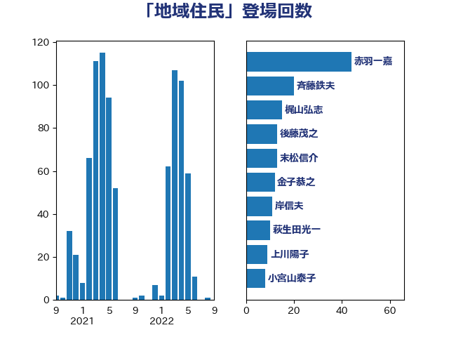

単語「地域住民」

| 赤羽一嘉 | 公明党 | 44 回 |
| 斉藤鉄夫 | 公明党 | 20 回 |
| 梶山弘志 | 自由民主党 | 15 回 |
| 後藤茂之 | 自由民主党 | 13 回 |
| 末松信介 | 自由民主党 | 13 回 |
| 金子恭之 | 自由民主党 | 12 回 |
| 岸信夫 | 自由民主党 | 11 回 |
| 萩生田光一 | 自由民主党 | 10 回 |
| 上川陽子 | 自由民主党 | 9 回 |
| 小宮山泰子 | 立憲民主党 | 8 回 |
| 青木愛 | 立憲民主党 | 8 回 |
| 吉川沙織 | 立憲民主党 | 7 回 |
| 岩渕友 | 日本共産党 | 7 回 |
| 岸真紀子 | 立憲民主党 | 7 回 |
| 野上浩太郎 | 自由民主党 | 7 回 |
| 古川元久 | 国民民主党 | 6 回 |
| 坂本哲志 | 自由民主党 | 6 回 |
| 山口壯 | 自由民主党 | 6 回 |
| 武田良太 | 自由民主党 | 6 回 |
| 田嶋要 | 立憲民主党 | 6 回 |
| 篠原豪 | 立憲民主党 | 6 回 |
| 菅義偉 | 自由民主党 | 6 回 |
| 道下大樹 | 立憲民主党 | 6 回 |
| 伊波洋一 | 無所属 | 5 回 |
| 国定勇人 | 自由民主党 | 5 回 |
| 小林茂樹 | 自由民主党 | 5 回 |
| 小泉進次郎 | 自由民主党 | 5 回 |
| 浜口誠 | 国民民主党 | 5 回 |
| 石原正敬 | 自由民主党 | 5 回 |
| 赤嶺政賢 | 日本共産党 | 5 回 |
| 阿部知子 | 立憲民主党 | 5 回 |
| 高橋千鶴子 | 日本共産党 | 5 回 |
| 伊藤俊輔 | 立憲民主党 | 4 回 |
| 山岡達丸 | 立憲民主党 | 4 回 |
| 岡本三成 | 公明党 | 4 回 |
| 岩田和親 | 自由民主党 | 4 回 |
| 徳永エリ | 立憲民主党 | 4 回 |
| 田村憲久 | 自由民主党 | 4 回 |
| 竹内真二 | 公明党 | 4 回 |
| 笹川博義 | 自由民主党 | 4 回 |
| 菊田真紀子 | 立憲民主党 | 4 回 |
| 西野太亮 | 自由民主党 | 4 回 |
| 野田国義 | 立憲民主党 | 4 回 |
| 三木亨 | 自由民主党 | 3 回 |
| 古川直季 | 自由民主党 | 3 回 |
| 城井崇 | 立憲民主党 | 3 回 |
| 塩村あやか | 立憲民主党 | 3 回 |
| 宮本徹 | 日本共産党 | 3 回 |
| 小沢雅仁 | 立憲民主党 | 3 回 |
| 川田龍平 | 立憲民主党 | 3 回 |
| 斎藤アレックス | 国民民主党 | 3 回 |
| 朝日健太郎 | 自由民主党 | 3 回 |
| 津島淳 | 自由民主党 | 3 回 |
| 湯原俊二 | 立憲民主党 | 3 回 |
| 熊谷裕人 | 立憲民主党 | 3 回 |
| 田村貴昭 | 日本共産党 | 3 回 |
| 美延映夫 | 日本維新の会 | 3 回 |
| 茂木敏充 | 自由民主党 | 3 回 |
| 西村康稔 | 自由民主党 | 3 回 |
| 西田昭二 | 自由民主党 | 3 回 |
| 重徳和彦 | 立憲民主党 | 3 回 |
| 青柳陽一郎 | 立憲民主党 | 3 回 |
| 中野英幸 | 自由民主党 | 2 回 |
| 伊藤岳 | 日本共産党 | 2 回 |
| 加藤勝信 | 自由民主党 | 2 回 |
| 吉田宣弘 | 公明党 | 2 回 |
| 坂本祐之輔 | 立憲民主党 | 2 回 |
| 大岡敏孝 | 自由民主党 | 2 回 |
| 室井邦彦 | 日本維新の会 | 2 回 |
| 小熊慎司 | 立憲民主党 | 2 回 |
| 山口那津男 | 公明党 | 2 回 |
| 山添拓 | 日本共産党 | 2 回 |
| 岸田文雄 | 自由民主党 | 2 回 |
| 平口洋 | 自由民主党 | 2 回 |
| 本村伸子 | 日本共産党 | 2 回 |
| 林芳正 | 自由民主党 | 2 回 |
| 柳ヶ瀬裕文 | 日本維新の会 | 2 回 |
| 柴田巧 | 日本維新の会 | 2 回 |
| 根本幸典 | 自由民主党 | 2 回 |
| 梅谷守 | 立憲民主党 | 2 回 |
| 江島潔 | 自由民主党 | 2 回 |
| 源馬謙太郎 | 立憲民主党 | 2 回 |
| 福島伸享 | 無所属 | 2 回 |
| 秋野公造 | 公明党 | 2 回 |
| 稲津久 | 公明党 | 2 回 |
| 穀田恵二 | 日本共産党 | 2 回 |
| 竹谷とし子 | 公明党 | 2 回 |
| 笠井亮 | 日本共産党 | 2 回 |
| 羽田次郎 | 立憲民主党 | 2 回 |
| 舞立昇治 | 自由民主党 | 2 回 |
| 舟山康江 | 国民民主党 | 2 回 |
| 若宮健嗣 | 自由民主党 | 2 回 |
| 輿水恵一 | 公明党 | 2 回 |
| 近藤和也 | 立憲民主党 | 2 回 |
| 野田聖子 | 自由民主党 | 2 回 |
| 野間健 | 立憲民主党 | 2 回 |
| 金城泰邦 | 公明党 | 2 回 |
| 金子恵美 | 立憲民主党 | 2 回 |
| 阿部司 | 日本維新の会 | 2 回 |
| 高橋光男 | 公明党 | 2 回 |
| こやり隆史 | 自由民主党 | 1 回 |
| 上田英俊 | 自由民主党 | 1 回 |
| 下野六太 | 公明党 | 1 回 |
| 中山展宏 | 自由民主党 | 1 回 |
| 中島克仁 | 立憲民主党 | 1 回 |
| 中川宏昌 | 公明党 | 1 回 |
| 中谷真一 | 自由民主党 | 1 回 |
| 丸川珠代 | 自由民主党 | 1 回 |
| 井原巧 | 自由民主党 | 1 回 |
| 伊東信久 | 日本維新の会 | 1 回 |
| 伊藤孝江 | 公明党 | 1 回 |
| 佐藤啓 | 自由民主党 | 1 回 |
| 加藤鮎子 | 自由民主党 | 1 回 |
| 務台俊介 | 自由民主党 | 1 回 |
| 勝部賢志 | 立憲民主党 | 1 回 |
| 古川康 | 自由民主党 | 1 回 |
| 古賀友一郎 | 自由民主党 | 1 回 |
| 國場幸之助 | 自由民主党 | 1 回 |
| 大口善徳 | 公明党 | 1 回 |
| 大塚耕平 | 国民民主党 | 1 回 |
| 大西英男 | 自由民主党 | 1 回 |
| 宮内秀樹 | 自由民主党 | 1 回 |
| 寺田静 | 無所属 | 1 回 |
| 山下芳生 | 日本共産党 | 1 回 |
| 山岸一生 | 立憲民主党 | 1 回 |
| 山崎誠 | 立憲民主党 | 1 回 |
| 山本博司 | 公明党 | 1 回 |
| 山本香苗 | 公明党 | 1 回 |
| 山谷えり子 | 自由民主党 | 1 回 |
| 山際大志郎 | 自由民主党 | 1 回 |
| 平林晃 | 公明党 | 1 回 |
| 平沢勝栄 | 自由民主党 | 1 回 |
| 打越さく良 | 立憲民主党 | 1 回 |
| 日下正喜 | 公明党 | 1 回 |
| 早稲田ゆき | 立憲民主党 | 1 回 |
| 末次精一 | 立憲民主党 | 1 回 |
| 杉田水脈 | 自由民主党 | 1 回 |
| 柳本顕 | 自由民主党 | 1 回 |
| 森本真治 | 立憲民主党 | 1 回 |
| 渡辺創 | 立憲民主党 | 1 回 |
| 渡辺周 | 立憲民主党 | 1 回 |
| 渡辺猛之 | 自由民主党 | 1 回 |
| 漆間譲司 | 日本維新の会 | 1 回 |
| 田中健 | 国民民主党 | 1 回 |
| 田名部匡代 | 立憲民主党 | 1 回 |
| 田畑裕明 | 自由民主党 | 1 回 |
| 畦元将吾 | 自由民主党 | 1 回 |
| 盛山正仁 | 自由民主党 | 1 回 |
| 石井準一 | 自由民主党 | 1 回 |
| 石垣のりこ | 立憲民主党 | 1 回 |
| 石川博崇 | 公明党 | 1 回 |
| 神田潤一 | 自由民主党 | 1 回 |
| 神谷裕 | 立憲民主党 | 1 回 |
| 福島みずほ | 社会民主党 | 1 回 |
| 空本誠喜 | 日本維新の会 | 1 回 |
| 竹内譲 | 公明党 | 1 回 |
| 篠原孝 | 立憲民主党 | 1 回 |
| 舩後靖彦 | れいわ新選組 | 1 回 |
| 若松謙維 | 公明党 | 1 回 |
| 落合貴之 | 立憲民主党 | 1 回 |
| 葉梨康弘 | 自由民主党 | 1 回 |
| 西銘恒三郎 | 自由民主党 | 1 回 |
| 赤池誠章 | 自由民主党 | 1 回 |
| 赤澤亮正 | 自由民主党 | 1 回 |
| 足立敏之 | 自由民主党 | 1 回 |
| 逢坂誠二 | 立憲民主党 | 1 回 |
| 逢沢一郎 | 自由民主党 | 1 回 |
| 進藤金日子 | 自由民主党 | 1 回 |
| 酒井庸行 | 自由民主党 | 1 回 |
| 鈴木憲和 | 自由民主党 | 1 回 |
| 長坂康正 | 自由民主党 | 1 回 |
| 長峯誠 | 自由民主党 | 1 回 |
| 長谷川岳 | 自由民主党 | 1 回 |
| 青山繁晴 | 自由民主党 | 1 回 |